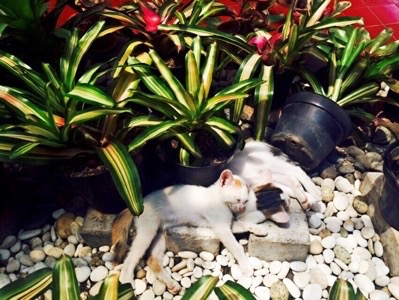
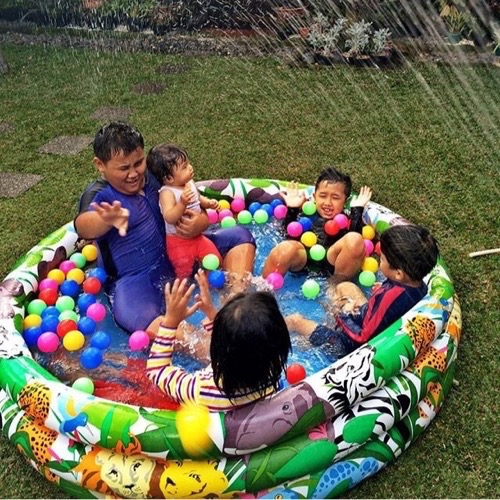
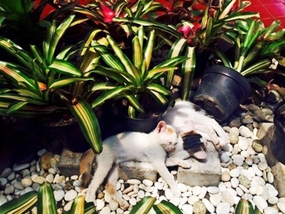
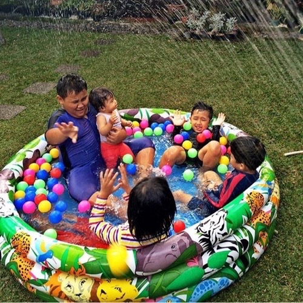

Halaman Tengah Abadi, tempat bermain, belajar dan berbagi
Awalnya ini adalah halaman belakang, seiring waktu dan semakin besar para penghuninya, dibangunlah rumah dan belakangpun menjadi tengah.
Penghuni utama di sini adalah rumput, tanaman dan para hewan resmi maupun pendatang. Beberapa kali mengalami perubahan, dari kandang burung dan ayam yang besar, hampir mengambil 50% luas halaman tengah, rumah kawanan kelinci yang jumlahnya lebih dari 20 ekor sampai bentuk yang sekarang, hamparan rumput dan green house di ujung timur.
Pernah ada wacana untuk dibangun kolam renang untuk menggantikan hamparan rumput gajah, tapi mayoritas penghuni tidak setuju, alasannya karena akan mengurangi keluasaan berlari, untuk berenang cukup lah memompa kolam plastik